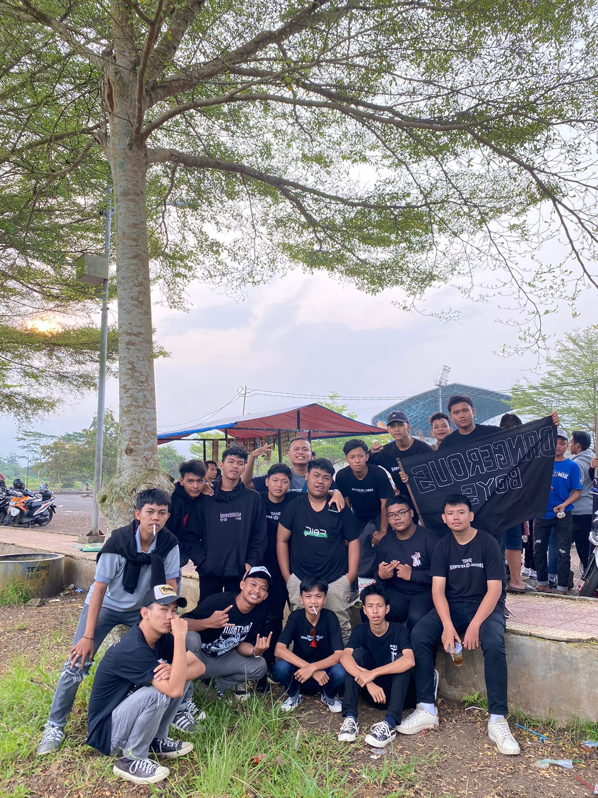
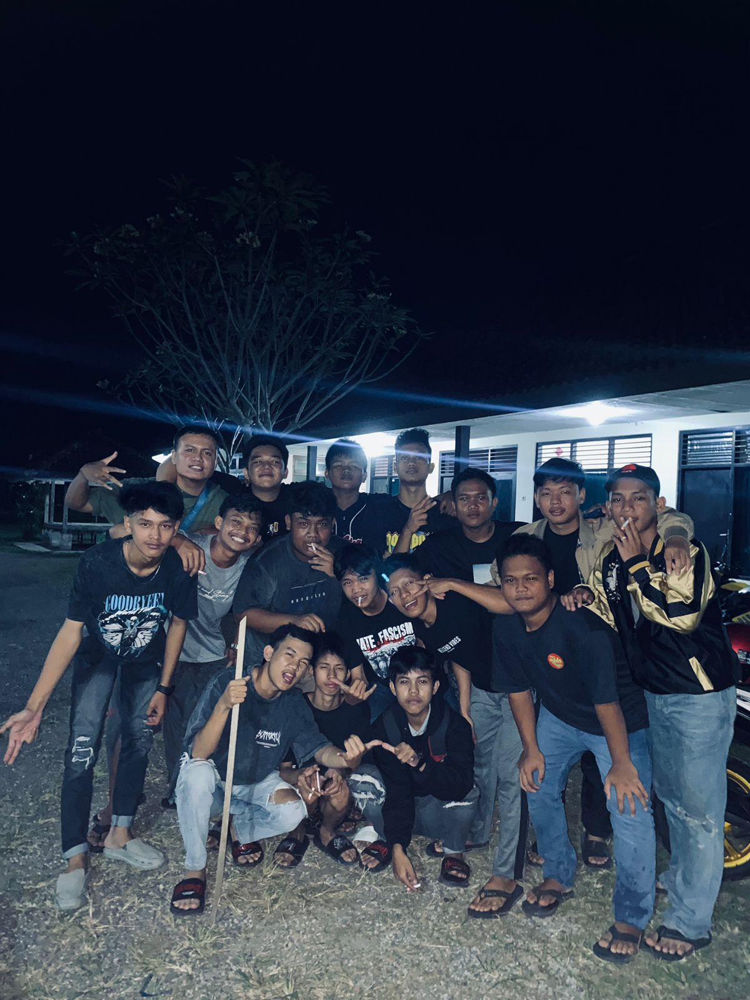
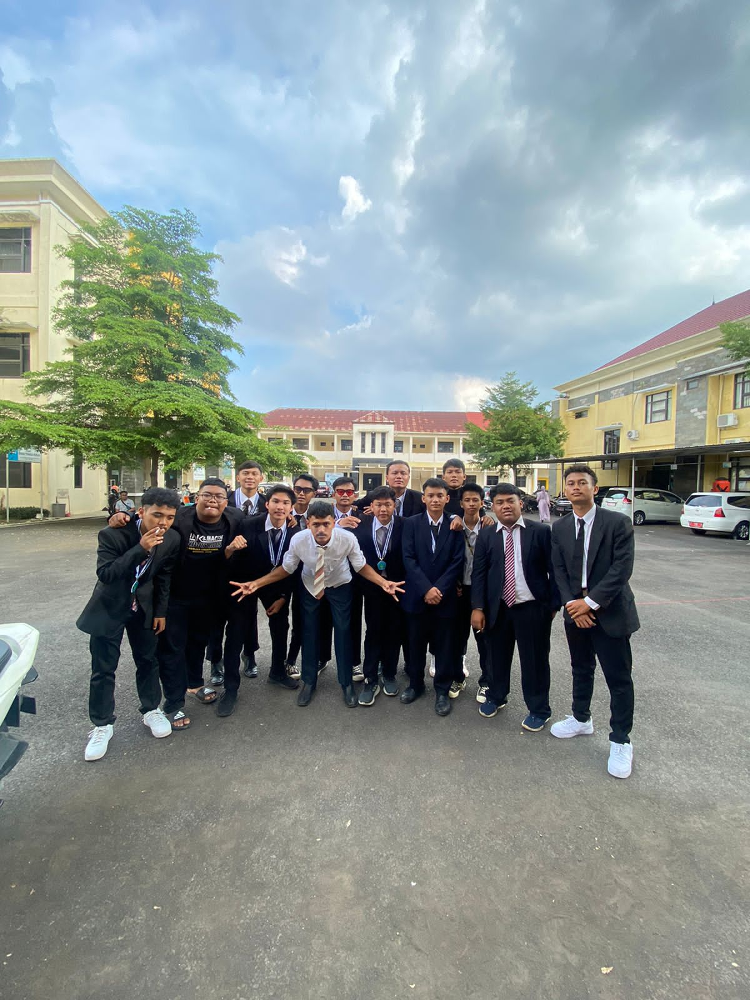
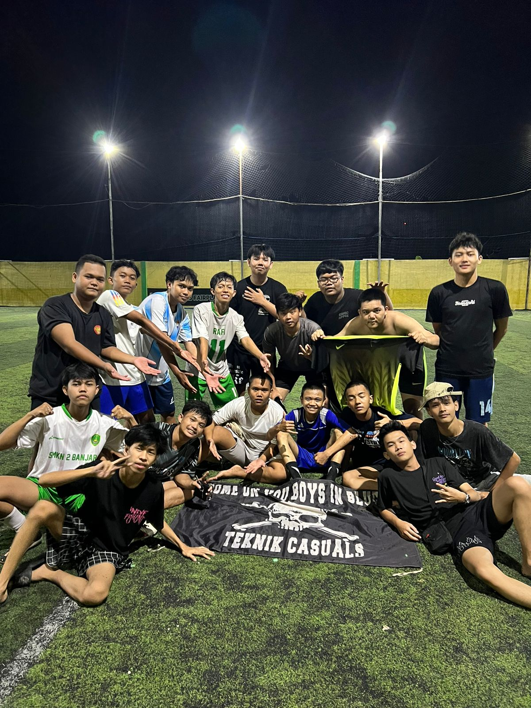
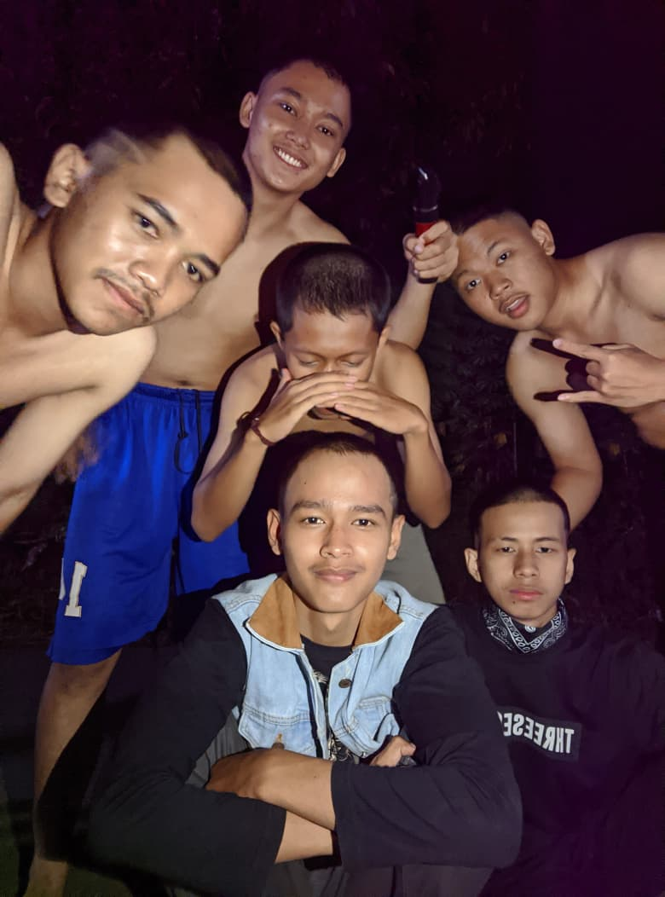
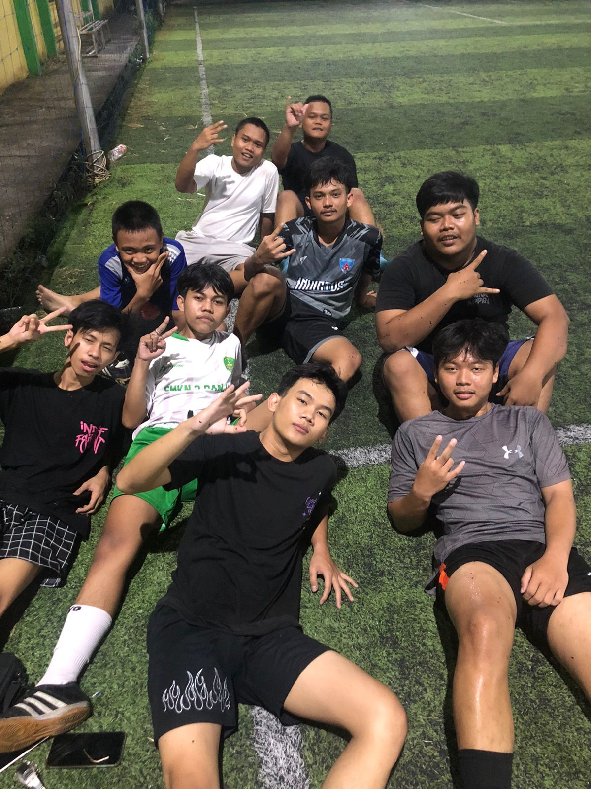

Malam Pertama Kita Merayakan
Malam pertama seluruh kawan berkumpul merayakan kebersamaan di Banjar City. Musik, tawa, dan janji persahabatan yang terus kami bawa hingga hari ini.
Dokumentasi persahabatan, ruang temu, dan arsip hidup yang berakar dari lorong SMKN 2 Banjar pada 2018 hingga jalanan kota hari ini.


Dangerous Boys berakar dari pertemanan di lorong SMKN 2 Banjar pada 2018. Ruang kelas, bangku sekolah, dan jalanan kota mempertemukan kami dalam satu ikatan yang kokoh.
Berasal dari berbagai jurusan kejuruan, kami menyatukan langkah untuk saling mendukung dalam berbagai situasi. Lingkaran pertemanan ini tumbuh meluas ke kawan-kawan dari berbagai penjuru Banjar City dan membentuk ruang solidaritas yang nyata.
Tahun demi tahun berselang, setiap pertemuan tetap menjaga komitmen yang sama: menghargai persaudaraan, merawat ingatan, dan berdiri bersama di tanah kelahiran kami.

Gulungan klise foto dari dua perayaan besar yang merekatkan persaudaraan Dangerous Boys.
Malam pertama seluruh kawan berkumpul merayakan kebersamaan di Banjar City. Musik, tawa, dan janji persahabatan yang terus kami bawa hingga hari ini.

Dua tahun berselang, pertemuan kedua memperluas lingkaran persahabatan dengan rekan-rekan komunitas dari berbagai penjuru Banjar City.
Sudut kota, trotoar jalanan, dan ruang singgah yang merekam perjalanan kami di Kota Banjar.

Ruang bertumbuh dan belajar arti saling menjaga.
Kebersamaan yang dirajut dari obrolan harian.
Kenangan langkah awal dari masa sekolah kejuruan.

Pertandingan sore yang mempererat kekompakan.
Tempat bertukar kabar dan merancang rencana.
Semangat kebersamaan yang terus hidup dalam ingatan.
"Banjar City menjadi tanah tempat kita tumbuh, saling menguatkan, dan merawat kenangan bersama."— Dangerous Boys · Banjar City, Jawa Barat
Kumpulan cerita, rilis kegiatan, dan kabar terkini dari anggota Dangerous Boys.